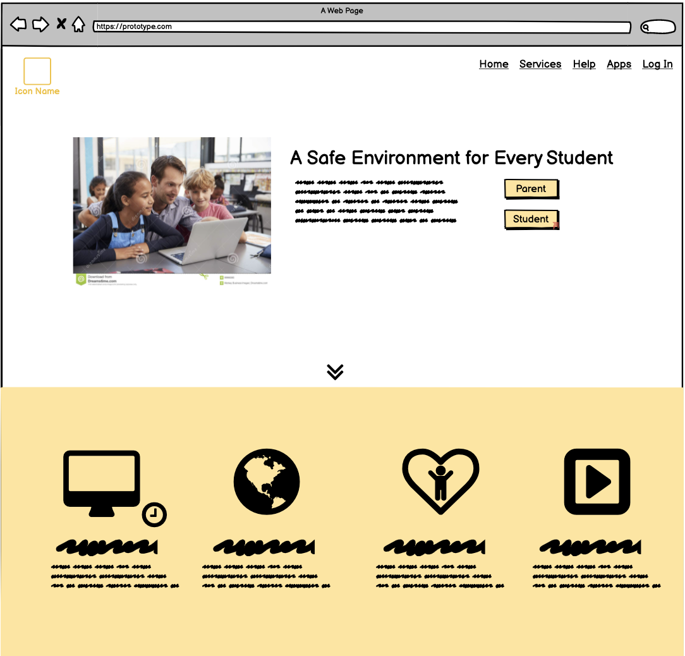
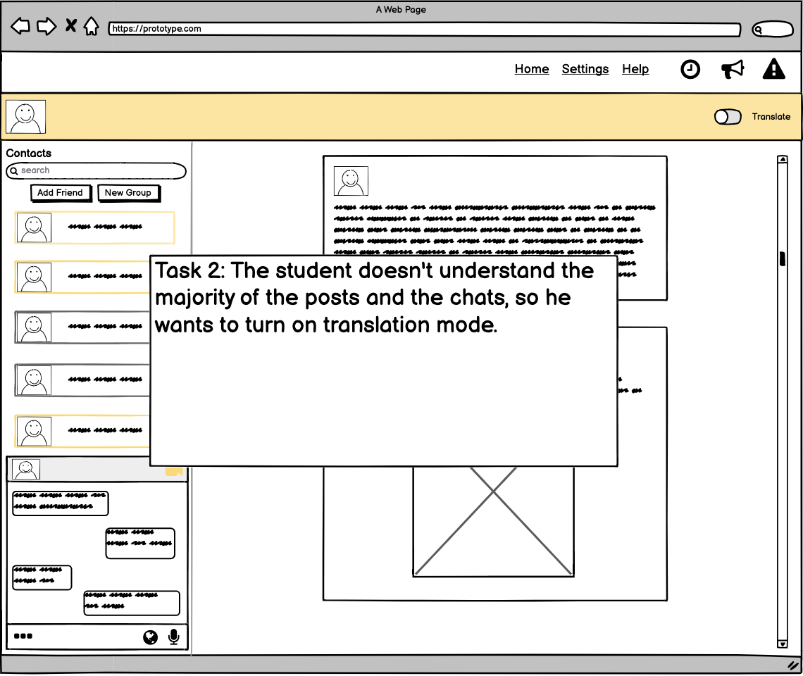
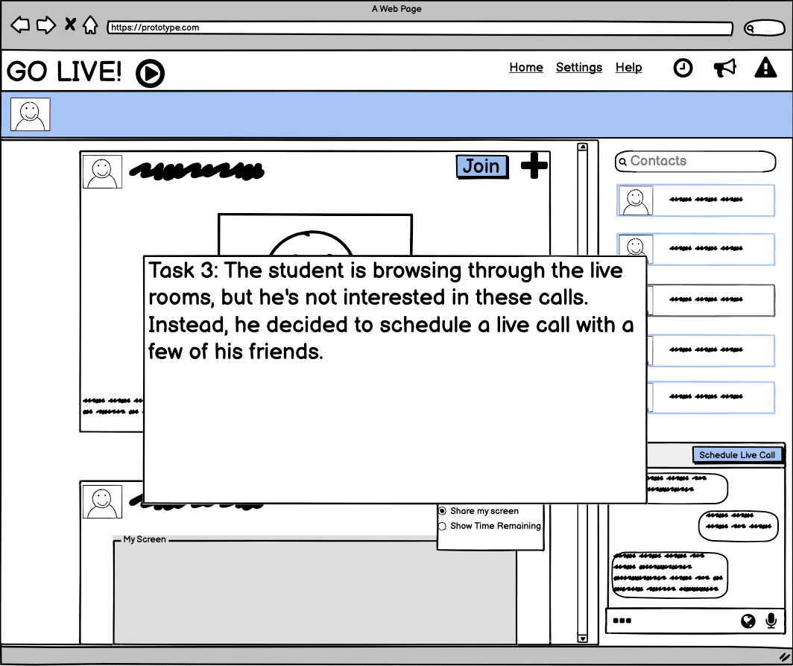
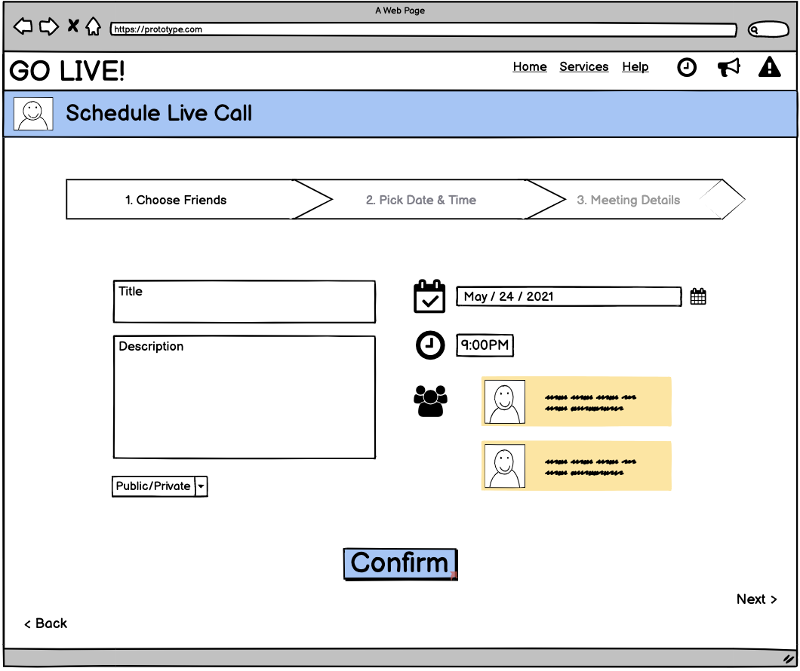
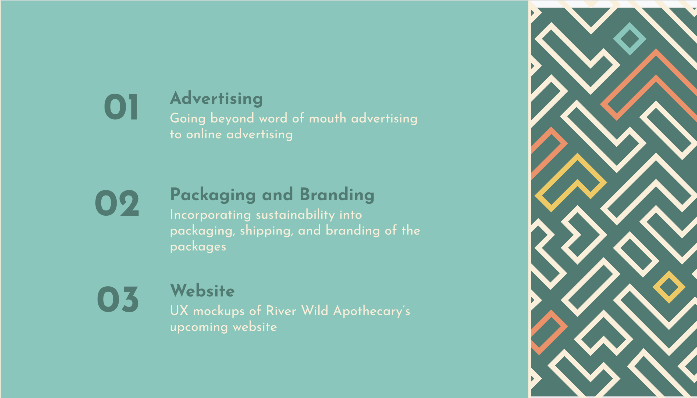
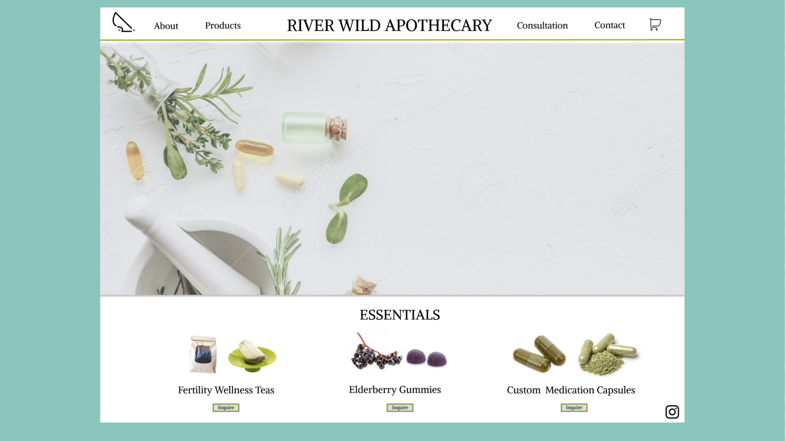
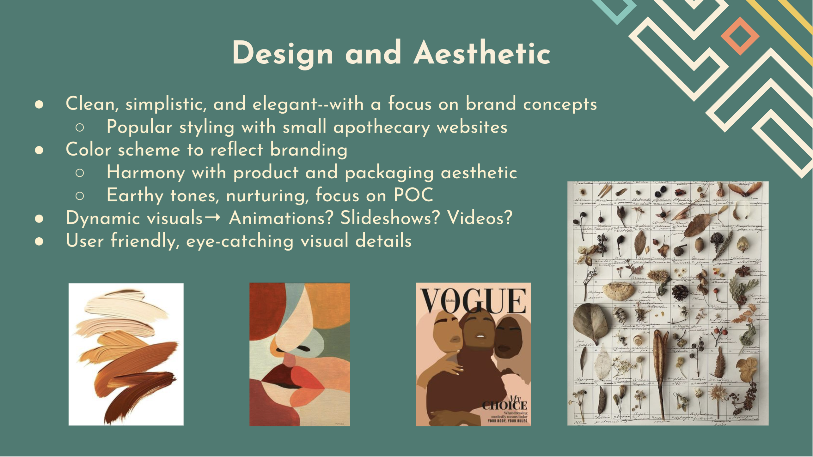
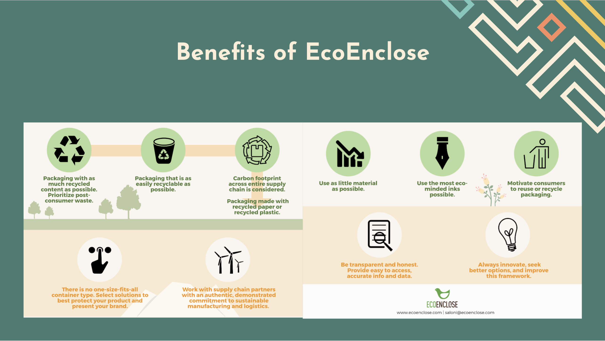

For my Human-Computer Interaction class at Wellesley College, my group and I are working on an application designed to help elementary students facilitate social interaction with their peers. Without much access to personal devices and social media accounts, many elementary students aren't able to communicate with their peers outside of school. Especially when covid-19 hit, the minimum school interactions turned into none, leaving a huge dent in the social behavioral factor of child development. This app mimics a standard adult social media app with simplified controls and an added parental management feature that ensures the safety of the users.
   One of the most memorable client for my consulting team was River Wild Apothecary. They create custom herb work for sex, stress, and sleep related difficulties for women, children, POC, and BIPOC. When we first received their call for help, the owner mainly sold her products through word of mouth and local advertising. With our help, she now has a website and a sustainable method of branding that grew her business well beyond her expectations. Here are some of the design and sustainability guidelines I created.
   